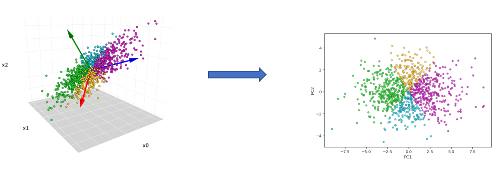
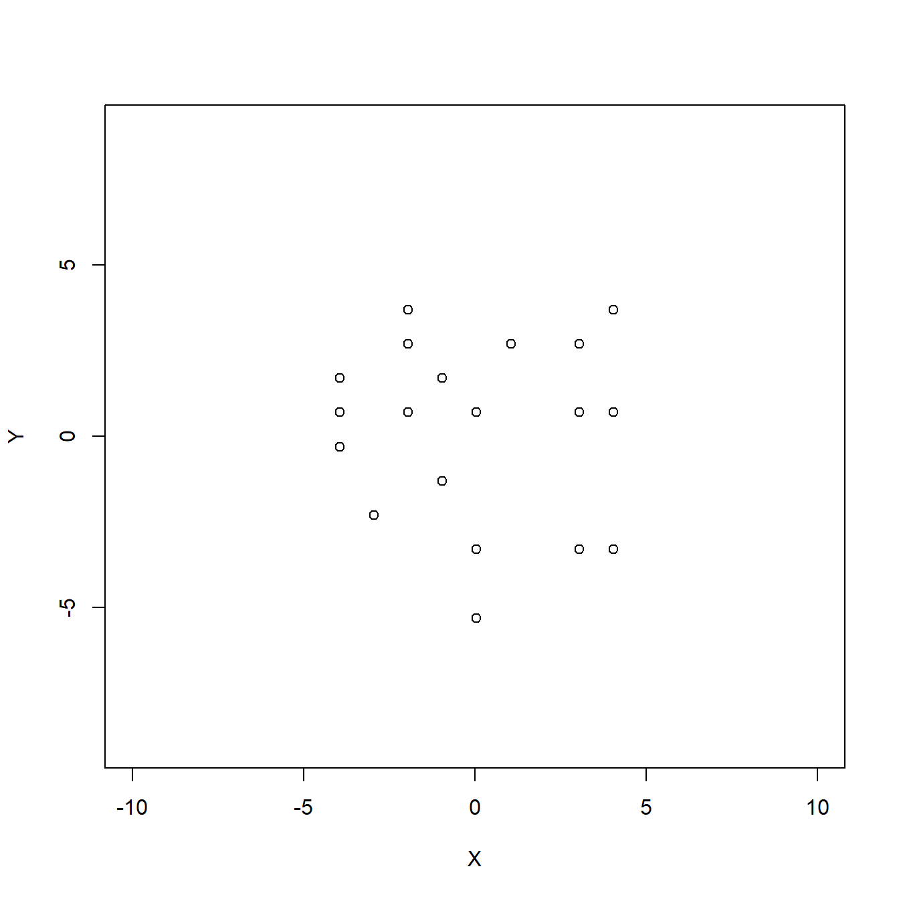

4 Análisis de Componentes Principales
4.1 Introducción
Cuando nos enfrentamos a problemas que se desarrollan en espacios muestrales de altas dimensiones, puede interesar considerar el estudio de dichos problemas en espacios de menor dimensión.
El análisis de componentes principales, PCA por sus siglas en inglés (Principal Component Analysis), es uno de los métodos más populares del análisis multivariado.
El PCA se utiliza cuando deseamos obtener una representación en menor dimensión para un conjunto de variables cuantitativas correlacionadas y queremos expresar la información importante como un conjunto de pocas variables nuevas llamadas componentes principales. Estas componentes se corresponden con una combinación lineal de las variables originales.
Dado que la información de un conjunto de datos se corresponde a la variación total que contiene, el objetivo del PCA es identificar direcciones (o componentes principales) a lo largo de las cuales la variación en los datos es máxima.
La reducción de la dimensionalidad consiste en describir con cierta precisión los valores de las \(p\) variables por un pequeño subconjunto \(r<p\) de ellas con una pérdida mínima de información. Por lo tanto, proyectaremos la muestra original en el nuevo subespacio pero conservando algunas características. En particular, vamos a realizar un ajuste ortogonal por mínimos cuadrados.
Algunos ámbitos importantes en los que es frecuente la utilización de la Reducción de la dimensionalidad podrían ser:
- Reconocimiento facial: Al partir de una proyección facial de tamaño \(M \times N\) píxeles puede resultar complicado el estudio completo de dicha imagen, puesto que da lugar a un vector con dimensión excesivamente alta. De modo que debemos reducir la dimensionalidad pero de forma que nos permita generar un sistema de clasificación facial de un individuo entre el resto de la población.
- Modelización de secuencias genómicas: Considera una proteína, formada por una secuencia de aminoácidos donde es posible encontrar hasta 20 tipos diferentes, su longitud puede llegar a ser de decenas hasta cientos de decenas de aminoácidos. De modo que, las proteínas con igual estructura pueden ser agrupadas en familias y el conjunto de familias proteicas distintas tendrá una dimensión inferior al conjunto de todas las proteínas. Pudiendo así encontrar de forma menos compleja propiedades particulares o incluso identificar nuevos miembros de una familia.
4.1.1 Matriz (tabla) de datos
Supongamos que disponemos de una tabla de datos con los valores de \(p\)-variables en \(n\) elementos de una población arreglados en una matriz \(\mathbf{X}\) de la siguiente forma:
| ID | \(\bf{x}_1\) | \(\bf{x}_2\) | \(\ldots\) | \(\bf{x}_p\) | \(\bf{v}_1\) | \(\bf{v}_2\) |
|---|---|---|---|---|---|---|
| \(1\) | \(x_{11}\) | \(x_{12}\) | \(\ldots\) | \(x_{1p}\) | \(v_{11}\) | \(v_{12}\) |
| \(2\) | \(x_{21}\) | \(x_{22}\) | \(\ldots\) | \(x_{2p}\) | \(v_{21}\) | \(v_{22}\) |
| \(3\) | \(x_{31}\) | \(x_{32}\) | \(\ldots\) | \(x_{3p}\) | \(v_{31}\) | \(v_{32}\) |
| \(\vdots\) | \(\vdots\) | \(\vdots\) | \(\vdots\) | \(\ddots\) | \(\vdots\) | \(\vdots\) |
| \(n\) | \(x_{n1}\) | \(x_{n2}\) | \(\ldots\) | \(x_{np}\) | \(v_{n1}\) | \(v_{n2}\) |
Donde las variables \(x_1,\ldots, x_n\) describen a los \(n\) individuos observados.
Las variables \(v_1\), \(v_2\) son de perfil (o explicativas) y ayudan a interpretar la variabilidad de los datos.
El objetivo del análisis es la reducción de la dimensionalidad. Buscamos un espacio de variables más reducido y fácil de interpretar.
El problema es que si reducimos el número de variables es posible que “perdamos parte toda la variabilidad de los datos originales”.
Así la idea básica es consentir una pérdida de información para lograr una ganancia en la significación.
4.1.2 Enfoque geométrico
Supongamos que \(p=2\) y que la nube de puntos de nuestra matriz de datos es la de la siguiente figura:

La siguiente figura muestra las dos componentes principales, es decir, las direcciones de las proyecciones que tienen máxima variabilidad.
Si proyectamos en la dirección de la primera componente obtendremos las proyecciones siguientes (en color azul):

Lo que significa que la varianza de los puntos azules es máxima; en el sentido de que cualquier otra dirección o recta, las proyecciones sobre ésta tendrán a lo más igual varianza.
Los puntos azules representan las coordenadas que tienen los puntos de nuestra tabla de datos (centrada) tomando como eje de abcisas la primera componente \(CP_1\).
Si proyectamos en la dirección de la “segunda componente”, obtendremos las proyecciones siguientes (en color verde):
4.2 Cálculo de las componentes
4.2.1 Cálculo de la primera componente
La primera componente principal se define como la combinación lineal de las variables originales que tiene varianza máxima. Los valores en esta primera componente de los \(n\) individuos se representarán por un vector \(\mathbf{z_1}\) dado por \[\mathbf{z_1}=\mathbf{Xa_1}.\] Si las variables originales tienen media cero, \(\mathbf{z_1}\) también tendrá media nula. Su varianza será
\[\begin{equation} \tag{1} Var(\mathbf{z_1})=\frac{1}{n}\mathbf{z_1^t}\mathbf{z_1}=\frac{1}{n}\mathbf{a_1^t X^t}\mathbf{Xa_1}=\mathbf{a_1^t S}\mathbf{a_1} \end{equation}\]
donde \(\mathbf{S}\) es la matriz de varianzas-covarianzas de las observaciones.
Es obvio que podemos maximizar la varianza tanto como queramos aumentando el módulo del vector \(\mathbf{a_1}\). Para que maximizar (1) tenga solución debemos imponer una restricción al módulo del vector \(\mathbf{a_1}\), y, sin pérdida de generalidad, impondremos que \(\mathbf{a_1^t}\mathbf{a_1}=1\). Introducimos esta restricción mediante el multiplicador de Lagrange: \[M=\mathbf{a_1^t}S\mathbf{a_1}-\lambda(\mathbf{a_1^t}\mathbf{a_1}-1)\] y maximizamos esta expresión derivando respecto a las componentes de \(\mathbf{a_1}\) e igualando a cero. Entonces \[\frac{\partial M}{\partial \mathbf{a_1}}=2\mathbf{Sa_1}-2 \lambda \mathbf{a_1}=0,\]
cuya solución es:
\[\begin{equation} \tag{2} \mathbf{Sa_1}= \lambda \mathbf{a_1}, \end{equation}\]
que implica que \(\mathbf{a_1}\) es un vector propio de la matriz \(\mathbf{S}\), y \(\lambda\) su correspondiente valor propio.
Para determinar qué valor propio de \(\mathbf{S}\) es la solución de (2), multiplicamos por la izquierda por \(\mathbf{a_1^t}\) a esta ecuación,
\[\begin{equation} \mathbf{a_1^t S a_1}= \lambda \mathbf{a_1^t a_1}= \lambda \end{equation}\]
y concluimos, por (1) que \(\lambda\) es la varianza de \(\mathbf{z_1}\). Como esta es la cantidad que queremos maximizar, \(\lambda\) será el mayor valor propio de la matriz \(\mathbf{S}\). Su vector asociado, \(\mathbf{a_1}\), define los coeficientes de cada variable en la primera componente principal.
Ejercicio: Calcula la primera componente principal con los logaritmos del fichero acciones.txt que podéis descargad en Aula Digital. Las observaciones corresponden a distintas acciones que cotizan en el mercado español y las variables son:
V1la rentabilidad efectiva por dividendos,V2la proporción de beneficios que va a dividendosV3el ratio entre precio por acción y beneficios.
¿Cuál de las variables está mejor representada por la componente principal 1?
4.2.2 Cálculo de la segunda componente
Vamos a obtener el mejor plano de proyección de l matriz \(\mathbf{X}\). Lo calcularemos estableciendo como función objetivo que la suma de las varianzas de \(\mathbf{z_1}=\mathbf{Xa_1}\) y \(\mathbf{z_2}=\mathbf{Xa_2}\) sean máximas, donde \(\mathbf{a_1}\) y \(\mathbf{a_2}\) son los vectores que definen el plano. La función objetivo será:
\[\begin{equation} \tag{3} \phi=\mathbf{a_1^t S}\mathbf{a_1} + \mathbf{a_2^t S}\mathbf{a_2} - \lambda_1 (\mathbf{a_1^t}\mathbf{a_1}-1) - \lambda_2 (\mathbf{a_2^t}\mathbf{a_2}-1) \end{equation}\]
que incorpora las restricciones de que las direcciones deben de tener módulo unitario. Derivando e igualando a cero: \[\frac{\partial \phi}{\partial \mathbf{a_1}}=2\mathbf{Sa_1}-2 \lambda_1 \mathbf{a_1}=0\]
\[\frac{\partial \phi}{\partial \mathbf{a_2}}=2\mathbf{Sa_2}-2 \lambda_2 \mathbf{a_1}=0\]
La solución del sistema es: \[\begin{equation} \tag{4} \mathbf{Sa_1}= \lambda \mathbf{a_1}, \end{equation}\] \[\begin{equation} \tag{5} \mathbf{Sa_2}= \lambda \mathbf{a_2}, \end{equation}\]
que indica que \(\mathbf{a_1}\) y \(\mathbf{a_2}\) deben ser vectores propios de \(\mathbf{S}\).
Tomando los vectores propios de norma uno y sustituyendo en (3), se obtiene que, en el máximo, la función objetivo es \[\begin{equation} \tag{6} \phi=\lambda_1+\lambda_2 \end{equation}\]
es claro que \(\lambda_1\) y \(\lambda_2\) deben ser los dos valores propios mayores de la matriz \(\mathbf{S}\) y \(\mathbf{a_1}\) y \(\mathbf{a_2}\) sus correspondientes vectores propios.
Observad que la covarianza entre \(\mathbf{z_1}\) y \(\mathbf{z_2}\), dada por \(\mathbf{a_1^t S a_2}\) es cero ya que =0, y las variables\(\mathbf{z_1}\) y \(\mathbf{z_2}\) estarán incorreladas.
Se puede demostrarse que si en lugar de maximizar la suma de varianzas, que es la traza de la matriz de covarianzas de la proyección, se maximiza la varianza generalizada (el determinante de la matriz de covarianzas) se obtiene el mismo resultado.
4.2.3 Generalización
Análogamente, el espacio de dimensión \(r\) que mejor representa a los puntos viene definido por los vectores propios asociados a los \(r\) mayores valores propios de \(\mathbf{S}\). Estas direcciones se denominan direcciones principales de los datos y a las nuevas variables por ellas definidas componentes principales. En general, la matriz \(\mathbf{X}\) (y por tanto la \(\mathbf{S}\)) tiene rango \(p\), existiendo entonces tantas componentes principales como variables que se obtendrán calculando los valores propios o raíces características, \(\lambda_1, \ldots, \lambda_p\), de la matriz de varianzas y covarianzas de las variables, \(\mathbf{S}\) , mediante:
\[\begin{equation} \tag{7} |\mathbf{S}-\lambda\mathbf{I}|=0 \end{equation}\]
y sus vectores asociados son: \[\begin{equation} \tag{8} (\mathbf{S}-\lambda_i\mathbf{I})\mathbf{a_i}=0. \end{equation}\]
Los términos \(\lambda_i\) son reales, al ser la matriz \(\mathbf{S}\) simétrica, y positivos, ya que \(\mathbf{S}\) es definida positiva.
Por ser \(\mathbf{S}\) simétrica si \(\lambda_j\) y \(\lambda_h\) son dos raíces distintas sus vectores asociados son ortogonales.
Si \(\mathbf{S}\) fuese semidefinida positiva de rango \(r < p\), lo que ocurriría si \(p−r\) variables fuesen combinación lineal de las demás, habría solamente \(r\) raíces características positivas y el resto serían ceros.
Llamando \(\mathbf{Z}\) a la matriz cuyas columnas son los valores de las \(p\) componentes en los \(n\) individuos, estas nuevas variables están relacionadas con las originales mediante:
\[\begin{equation} \tag{9} \mathbf{Z}=\mathbf{X}\mathbf{A} \end{equation}\]
donde \(\mathbf{A^t A}=\mathbf{I}\). Calcular las componentes principales equivale a aplicar una transformación ortogonal \(\mathbf{A}\) a las variables \(\mathbf{X}\) (ejes originales) para obtener unas nuevas variables \(\mathbf{Z}\) incorreladas entre sí. Esta operación puede interpretarse como elegir unos nuevos ejes coordenados, que coincidan con los “ejes naturales” de los datos.
4.3 Ejemplo
Vamos a realizar un análisis de componentes principales (PCA) sobre un conjunto de datos con la estatura de niños recién nacidos.
| \(\bf{x}_1\) | \(\bf{x}_2\) | \(\bf{x}_3\) | \(\bf{x}_4\) | Sexo |
|---|---|---|---|---|
| 78 | 48.2 | 2.75 | 29.5 | Niña |
| 69 | 45.5 | 2.15 | 26.3 | Niña |
| 77 | 46.3 | 4.41 | 32.2 | Niña |
| 88 | 49 | 5.52 | 36.5 | Niño |
| 67 | 43 | 3.21 | 27.2 | Niña |
| 80 | 48 | 4.32 | 27.7 | Niña |
| 74 | 48 | 2.31 | 28.3 | Niña |
| 94 | 53 | 4.3 | 30.3 | Niño |
| 102 | 58 | 3.71 | 28.7 | Niño |
donde:
\(\bf{x}_1:\) edad en días
\(\bf{x}_2:\) estatura al nacer en cm
\(\bf{x}_3:\) peso en Kg. al nacer
\(\bf{x}_4:\) aumento porcentual de su peso con respecto de su peso al nacer.
Sexo es una variable de perfil que podría ayudarnos a explicar algunos de los resultados del análisis de componentes principales.
El código para la carga de datos
n = 9
p = 4
X = matrix(c(78,48.2,2.75,29.5,69,45.5,2.15,26.3,
77,46.3,4.41,32.2, 88,49,5.52,36.5, 67,43,3.21,27.2,
80,48,4.32,27.7, 74,48,2.31,28.3, 94,53,4.3,30.3,
102,58,3.71,28.7),nrow=n,byrow=T)
Datos= as.data.frame(X)
names(Datos) = paste("x",c(1:p),sep="")
Sexo = as.factor(c("Niña","Niña","Niña","Niño",
"Niña","Niña","Niña","Niño","Niño"))
Datos$Sexo=SexoAnálisis exploratorio

El código de R para realizar el cálculo:
colMeans(X)[1] 81.000000 48.777778 3.631111 29.633333Hn=diag(n)-1/n # matriz de centrado
cX=Hn%*%X # matriz centrada
round(cX,3) [,1] [,2] [,3] [,4]
[1,] -3 -0.578 -0.881 -0.133
[2,] -12 -3.278 -1.481 -3.333
[3,] -4 -2.478 0.779 2.567
[4,] 7 0.222 1.889 6.867
[5,] -14 -5.778 -0.421 -2.433
[6,] -1 -0.778 0.689 -1.933
[7,] -7 -0.778 -1.321 -1.333
[8,] 13 4.222 0.669 0.667
[9,] 21 9.222 0.079 -0.933S<-(1/n)*t(X)%*%Hn%*%X #estimador sesgado de la matriz de covarianza
round(S,3) # daría igual cov(X)*(n-1)/n [,1] [,2] [,3] [,4]
[1,] 119.333 43.133 6.148 12.511
[2,] 43.133 17.193 1.148 1.886
[3,] 6.148 1.148 1.111 2.428
[4,] 12.511 1.886 2.428 8.624eigen(S)eigen() decomposition
$values
[1] 136.61529623 8.86125966 0.73789460 0.04677667
$vectors
[,1] [,2] [,3] [,4]
[1,] 0.93439437 -0.02238785 0.2555755 0.24715806
[2,] 0.33947477 0.35413519 -0.6610845 -0.56772562
[3,] 0.04701065 -0.24770838 0.5656945 -0.78512437
[4,] 0.09723192 -0.90151407 -0.4214714 -0.01342527- Los valores propios son:
\[\lambda_1=136.615,\quad \lambda_2=8.861,\quad \lambda_3 = 0.738,\quad \lambda_4 = 0.047.\]
- Los vectores propios ortonormales correspondientes a los valores propios, son los que aparecen con el nombre:
$vectors
Las expresiones de las variables nuevas \(CP_i\) en función de las antiguas, notemos que se calculan sobre los datos centrados, son:
\[\begin{array}{rl} CP_1 = & 0.934\cdot \tilde{X}_1 + 0.339\cdot \tilde{X}_2 + 0.047\cdot \tilde{X}_3\\ & + 0.097 \cdot \tilde{X}_4, \\ CP_2 = & -0.022\cdot \tilde{X}_1 +0.354\cdot \tilde{X}_2 -0.248 \cdot \tilde{X}_3 \\ & -0.902 \cdot \tilde{X}_4, \\ CP_3 = & 0.256\cdot \tilde{X}_1 -0.661 \cdot \tilde{X}_2 +0.566\cdot \tilde{X}_3\\ &-0.421\cdot \tilde{X}_4, \\ CP_4 = & 0.247 \cdot \tilde{X}_1 - 0.568\cdot \tilde{X}_2 - 0.785\cdot \tilde{X}_3 \\ & - 0.013 \cdot \tilde{X}_4. \end{array}\]
La nueva matriz de datos respecto de las nuevas variables será:
\[\mathbf{CP}= \tilde{\mathbf{X}} \mathbf{u} = \left( \begin{array}{rrrr} -3.054 & 0.201 & -0.827 & 0.280 \\ -12.719 & 2.480 & -0.333 & 0.103 \\ -4.293 & -3.295 & -0.025 & -0.228 \\ 7.373 & -6.736 & -0.183 & 0.029 \\ -15.299 & 0.565 & 1.029 & 0.183 \\ -1.354 & 1.319 & 1.463 & -0.321 \\ -6.997 & 1.411 & -1.460 & -0.233 \\ 13.677 & 0.437 & 0.629 & 0.282 \\ 22.666 & 3.618 & -0.292 & -0.095 \\ \end{array} \right)\]
Podéis revisar que si se multiplican escalarmente dos columnas cualesquiera, el resultado es nulo. Es decir, las columnas de la nueva matriz de datos son ortogonales dos a dos.
Si representamos gráficamente las dos primeras componentes, podemos observar que se puede distinguir entre niños y niñas con las dos primeras componentes.